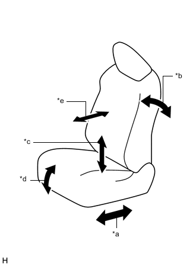

CHECK POWER SEAT FUNCTION

| *a | Slide Function (for Power Seat) |
| *b | Reclining Function (for Power Seat) |
| *c | Lifter Function (for Power Seat) |
| *d | Front Vertical Function (for Power Seat) |
| *e | Lumbar Support Adjustment Function |
Check the basic functions.
Operate the power seat switches and check that each seat function operates properly:
Slide function (for power seat)
Reclining function (for power seat)
Lifter function (for power seat)
Front vertical function (for power seat)
Lumbar support adjustment function
CHECK FRONT SEAT MOTOR (SLIDING, RECLINING, FRONT VERTICAL AND LIFTER FUNCTION) (for Power Seat)
Check the PTC operation inside the power seat motor.
Tech Tips
The resistance of the PTC thermistor increases when a switch of the front power seat switch is held down even after the seat has been moved to the farthest possible position in one direction. If the resistance increases beyond a specified level, the current is shut off to prevent a short circuit.
Note
The inspection should be performed with the seat installed in the vehicle.
Perform the 4 steps below to check the full range of motion for each power seat function.
Choose a power seat function. Operate a switch of the front power seat switch and move the seat to the farthest possible position in one direction. Keep the seat in that position for approximately 60 seconds.
Operate the switch of the front power seat switch again and continue to try to move the seat in the same direction as in the previous step. Measure the time until the current is shut off (motor operation sound will stop).
After the current is shut off, release the switch of the front power seat switch and wait for approximately 60 seconds.
Operate the same switch of the front power seat switch and move the seat in the opposite direction. Check that the motor operates.
CHECK LUMBAR SUPPORT ADJUSTMENT MOTOR
Check the PTC operation inside the lumbar support adjustment motor (for Power Seat).
Note
The inspection should be performed with the seat installed in the vehicle.
Operate the front power seat switch and move the lumbar support to either the foremost or rearmost position. Keep the seat in that position for approximately 60 seconds.
Operate the front power seat switch again and continue to try to move the lumbar support in the same direction as in the previous step. Measure the time until the current is shut off (motor operation sound will stop).
After the current is shut off, release the front power seat switch and wait for approximately 60 seconds.
Operate the front lumbar power seat switch and move the support in the opposite direction. Check that the motor operates.
Check the PTC operation inside the lumbar support adjustment motor (for Manual Seat).
Note
The inspection should be performed with the seat installed in the vehicle.
Operate the front lumbar power seat switch and move the lumbar support to either the foremost or rearmost position. Keep the seat in that position for approximately 60 seconds.
Operate the front lumbar power seat switch again and continue to try to move the lumbar support in the same direction as in the previous step. Measure the time until the current is shut off (motor operation sound will stop).
After the current is shut off, release the front lumbar power seat switch and wait for approximately 60 seconds.
Operate the front lumbar power seat switch and move the lumbar support in the opposite direction. Check that the motor operates.